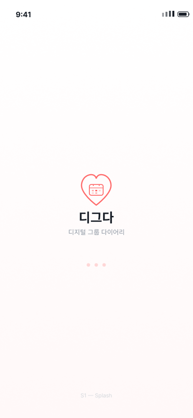
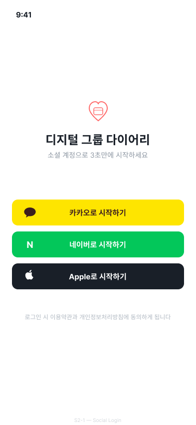
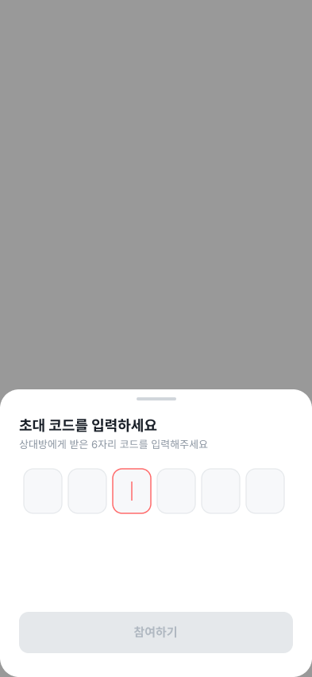
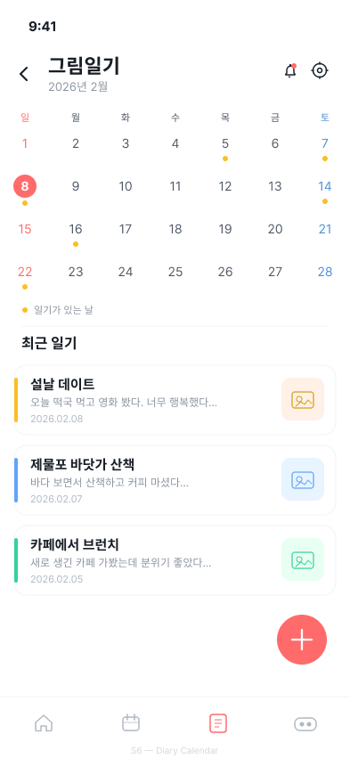
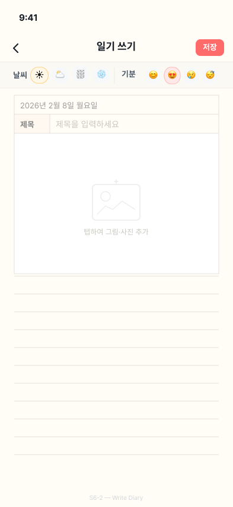
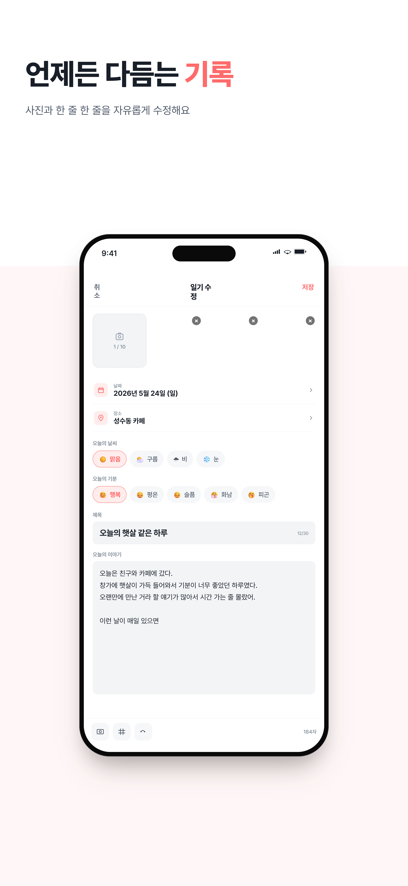
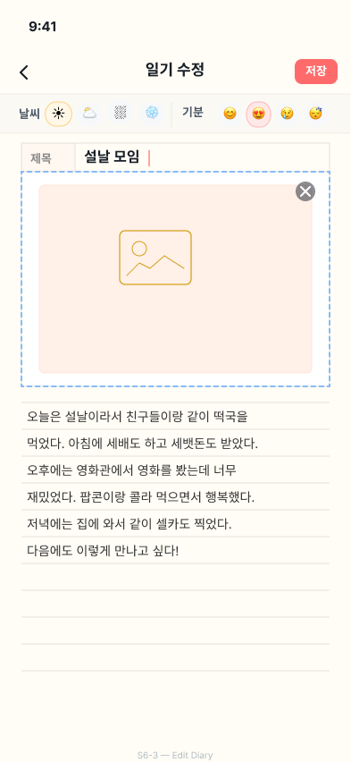
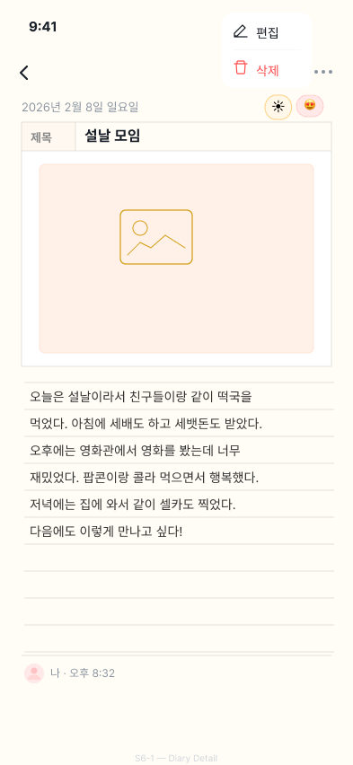

그룹 다이어리 · 일정 공유 모바일 서비스
카카오 로컬 API 활용 신청 보충 자료
디그팟은 가족·연인·친구 등 친밀한 소그룹이 일기와 일정을 비공개로 공유하는 모바일 앱이기 때문에, 구조상 비회원 둘러보기(public landing)가 존재하지 않습니다. 일기와 일정은 그룹 멤버에게만 노출되는 사적인 정보이므로, 카카오·네이버·애플 소셜 로그인 후 그룹을 생성·참여해야만 본 화면들이 표시됩니다.
이 문서는 카카오 심사 담당자가 앱을 직접 설치·가입하지 않고도 전체 이용 동선과 카카오 로컬 API 가 호출되는 정확한 지점을 한 번에 확인할 수 있도록, 각 단계 화면을 와이어프레임/실 캡처로 정리한 보충 자료입니다.
iOS TestFlight 또는 Android APK 빌드 전달도 가능합니다. (메일: chltmdgh517@naver.com)
“가족·연인·친구 그룹이 사진·일기·일정을 함께 기록하고 회상하는 비공개 그룹 다이어리 앱.”
| 기능 | 설명 |
|---|---|
| 그룹 생성·참여 | 초대 코드로 친밀한 사람들끼리 비공개 그룹 결성. 멤버 외 외부 노출 없음. |
| 일정 캘린더 | 그룹 일정 공유, 참가자 지정, 알림 기능 |
| 그림일기 (★) | 날짜·기분·날씨·장소·사진·본문 을 한 장의 일기로 저장. 본 신청의 대상 기능 |
| 리액션·댓글 | 좋아요 / 이모지 5종 / 댓글 — 그룹 멤버 간 공감 표현 |
| 알림 | 그룹 활동 푸시 알림 (FCM) |
| 마이페이지 | 프로필 수정, 알림 설정, 개인정보 처리방침 |
그림일기는 날짜·사진·기분·날씨·장소·본문의 6개 메타 필드로 구성됩니다. 이 중 “장소”는 사용자가 그날 다녀온 카페·식당·관광지·공원 등의 이름을 일기에 함께 기록하기 위한 필드입니다.
사용자가 장소 이름을 직접 키보드로 입력하게 하면 오타·표기 불일치(예: “스타벅스 성수점” vs “스타벅스 성수1호점”) 가 발생해 일기 데이터의 정합성과 회상 편의가 크게 떨어집니다. 그래서 우리는 카카오 로컬 키워드 검색 API 를 이 한 지점에서만 호출하여, 사용자가 키워드를 검색해 정식 상호명을 선택하도록 합니다.
GET https://dapi.kakao.com/v2/local/search/keyword.jsonAuthorization: KakaoAK <REST_API_KEY>
| 데이터 | 카카오로 전송 | 자체 서버 저장 |
|---|---|---|
| 사용자 ID / 프로필 | ❌ 전송 안 함 | ✅ (소셜 로그인 토큰 + 닉네임) |
| 일기 본문 · 사진 | ❌ 전송 안 함 | ✅ (그룹 멤버만 열람) |
| 검색 키워드 (예: “성수동 카페”) | ✅ 사용자가 검색 버튼 눌렀을 때만 | ❌ 저장 안 함 |
| 선택한 장소의 이름 문자열 | — | ✅ diary.location 컬럼 1개 |
| 좌표 · 도로명주소 · 카테고리 · place_id | — | ❌ 저장 안 함 |
심사 담당자가 앱을 설치하지 않고도 전체 흐름을 따라갈 수 있도록, 첫 진입부터 카카오 로컬 API 호출 시점까지 8단계를 차례로 정리합니다. 4-6 단계가 본 신청의 핵심 호출 지점입니다.





/v2/local/search/keyword.json 이 호출되어 결과 리스트가 표시됩니다. 사용자는 원하는 장소를 탭해 선택합니다.
diary.location 으로 자체 서버에 저장. 좌표/주소/place_id 는 저장하지 않음.

아래는 STEP 6 “장소 검색” 화면을 크게 확대한 것입니다. 이 화면에서 검색바에 키워드를 입력하고 검색 버튼을 누르는 순간 카카오 로컬 키워드 검색 API 가 1회 호출되며, 응답 결과가 하단 리스트에 표시됩니다. 사용자는 원하는 장소를 탭해 선택합니다.
place_name 문자열을 일기 저장 시 함께 서버로 보냅니다.| 구간 | 예상 MAU | 일일 호출량 |
|---|---|---|
| 현재 (베타) | 약 500명 | 2,000 ~ 5,000 건 |
| 정식 출시 +3개월 | 약 2,000명 | 8,000 ~ 20,000 건 |
| 정식 출시 +6개월 | 약 5,000명 | 20,000 ~ 50,000 건 |
산정 근거: 1인당 주 2~5회 일기 작성 × 일기 1건당 평균 1~3회 키워드 검색. 피크 시간대(저녁 9~11시)에 일일 호출의 약 35% 가 집중되는 패턴.
위 확장은 본 신청 범위에 포함되지 않으며, 도입 시 별도 변경 신청을 진행하겠습니다.
심사 진행 중 추가 자료(테스트 계정·초대 코드·iOS TestFlight 빌드·Android APK)가 필요하시면 아래 메일로 회신 주십시오. 영업일 기준 1일 이내 회신해 드리겠습니다.
| 항목 | 내용 |
|---|---|
| 운영사 | DateDiary |
| 서비스명 | 디그팟 (DigPot) |
| 담당자 메일 | chltmdgh517@naver.com |
| 저장소 | github.com/DateDiary (Digda-app · Digda-server) |